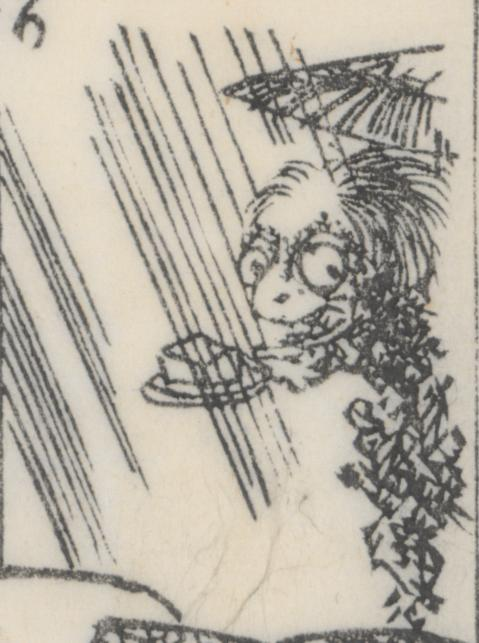

屏風に描かれた化物。笠を被って手に豆腐を乗せた盆を持っている。雨が降っている。草木から顔を覗かせている。顔がびいがんこ坊に似ている。
著作者：一陽齋豊國ほか／出典：親書誌：U426_nichibunken_0444：庭訓武藏鐙／日付：2017／資源識別子：U426_nichibunken_0444_0015_0000
Copyright (c)2010- International Research Center for Japanese Studies, Kyoto, Japan. All rights reserved.